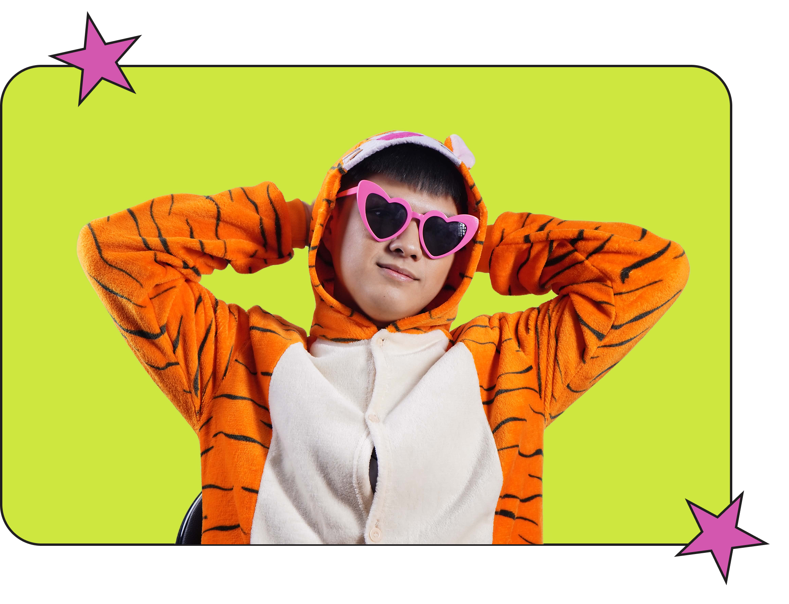

It's-a Me!
Hi! My name is Emil Reily A. Baron and I am from Cubao, Quezon City. I am a leap-year baby born in February 29, 2008, so I am both currently 18 and 4-years-old.
I am a first-year college student from CIIT, pursuing a degree in BSEMC majoring in Game Development. I am very interested in learning different programming languages and developing other technical skills that are essential in creating games.